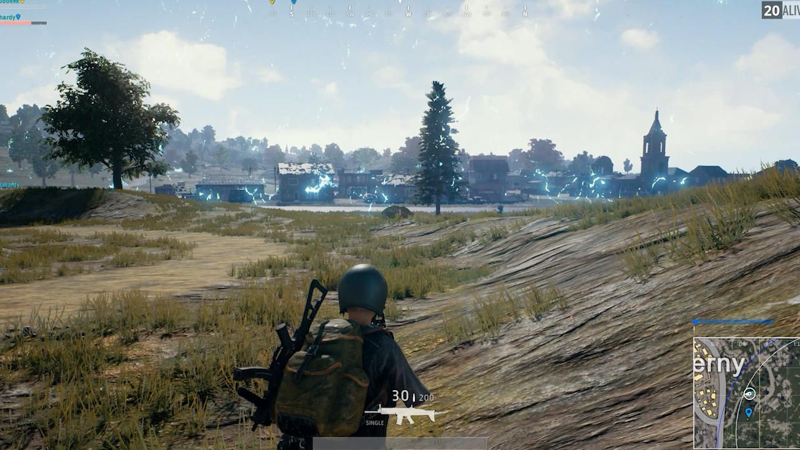

VideoJuegos
Pubg Mobile
PUBG es el videojuego más popular de 2017, y recién ayer lanzó su versión 1.0. Es decir, alcanzó el éxito aún antes de lanzar una versión final. En el PlayerUnknown's Battlegrounds de Bluehole Studio, vamos a tener que sobrevivir en una isla luego de tirarnos en paracaídas. Es un escenario gigante, en el que combatimos a otros 100 participantes, en un formato de shooter en línea.